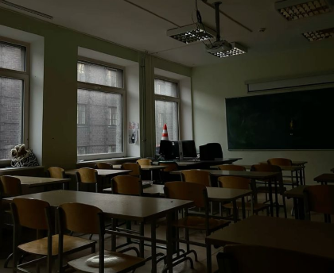
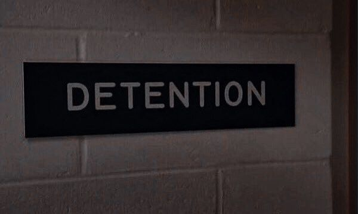

As últimas aulas do dia transcorreram exatamente como sempre: longas explicações carregadas de teoria, uma enxurrada de exemplos práticos e, como se não bastasse, uma sequência quase interminável de atividades, algumas resolvidas ali mesmo, outras empurradas para casa. Era o famoso mal necessário que aquela escola defendia com unhas e dentes para sustentar seu discurso institucional: formar os melhores. Ou, sendo mais realista, produzir gente minimamente funcional para o mundo lá fora.
Naquele ponto, a maioria da sala já estava no limite. Havia alunos largados sobre as carteiras, outros lutando contra o sono com os olhos semicerrados, e alguns que simplesmente desistiram e dormiam sem culpa alguma. A exceção era Miska. Ela seguia firme, concentrada, encarando o desgaste com a naturalidade de quem já o conhecia bem. Aquela rotina pesada já fazia parte do seu cotidiano há tempo demais para ainda causar espanto.
Miska sabia que reclamar não mudaria absolutamente nada. No fim das contas, as tarefas precisariam ser feitas, os prazos cumpridos, os conteúdos absorvidos. Ela também tinha plena consciência de que aquelas horas enfurnada em exercícios eram só a ponta de um iceberg bem mais cruel. Fora dali, ainda a esperavam jornadas de trabalho, cobranças constantes, um chefe impaciente pronto para gritar por qualquer erro mínimo, pessoas difíceis de lidar e dias repetidos em looping infinito. Tudo isso para, no final do mês, receber um salário que, apesar de não ser dos sonhos, era suficiente para se manter de pé.
Então, por que reclamar da escola?
No fim das contas, talvez tudo aquilo ainda valesse a pena.
Quando o sino tocou novamente, agora pela última vez, a reação foi imediata. As cadeiras rangeram, mochilas foram jogadas nos ombros e os alunos saíram quase correndo. Ninguém queria olhar para trás, o simples ato de permanecer mais um segundo naquela sala parecia ser uma punição adicional. O desejo coletivo era simples: chegar em casa, se jogar na cama e apodrecer tranquilamente consumindo qualquer besteira nas redes sociais.
Finalmente, era hora de ir embora.
Miska foi a última a deixar a sala, como de costume. Do lado de fora, Ashley, Kenda e Jellie a esperavam encostadas na parede, conversando distraídas. Assim que ela apareceu, as quatro se juntaram e seguiram juntas pelo corredor, caminhando em direção à saída da escola, carregando o cansaço do dia e, ao mesmo tempo, a leve promessa de um fim de tarde menos sufocante.
— E aí, Miska, como foram as aulas? — Ashley puxou assunto, quebrando o silêncio enquanto ajustava a mochila no ombro.
— Uma porcaria, como sempre, mas nada fora do esperado. — respondeu ela, dando de ombros, num tom resignado. — Dá pra sobreviver.
— Eu apaguei em quase todas, haha! — Kenda comentou, rindo despreocupada. — Meu cérebro simplesmente desistiu hoje. Não tava tankando mais, não.
— Eu fiquei foi com a maior cara de vento, praticamente nem prestei atenção. — Ashley completou, soltando um suspiro antes de lançar um olhar vago à frente. — Acabei passando o tempo todo pensando em umas coisas.
— Pensando, é? No quê? — Jellie perguntou, curiosa, arqueando levemente a sobrancelha.
— Ah, depois eu falo sobre iss—
Sua frase morreu no meio quando Ashley olhou adiante e percebeu o que estava prestes a acontecer.
Miska, distraída, acabou esbarrando em um grupo de três alunos, dois garotos e uma garota. No instante seguinte, o corpo dela reagiu antes mesmo do pensamento: postura retraída, ombros tensos, mãos próximas ao tronco, já à espera do pior.
— A-ai… droga, me desculpa! Foi sem querer, eu não vi— — começou Miska, atropelando as próprias palavras.
— Aí! Olha por onde anda, piranha! — a garota disparou, a voz carregada de irritação e desprezo.
Antes que qualquer um tivesse tempo de reagir, ela deu um empurrão forte e seco. Miska perdeu o equilíbrio e caiu no chão com um impacto brutal. O cotovelo bateu com violência contra o piso, arrancando dela um gemido abafado de dor.
O corredor parou.
Alguns alunos congelaram no lugar, trocando olhares tensos, incertos sobre intervir ou fingir que não era com eles. Outros, mais cruéis, ou simplesmente covardes, riram, tratando a cena como apenas mais um espetáculo gratuito no fim do dia.
Judy, Jess e Robert.
Aqueles três já tinham fama suficiente para não passarem despercebidos. Eram conhecidos por onde passavam, não por mérito algum, mas pelo rastro de intimidação que deixavam para trás. Conseguir o que queriam pela força, pelo medo e pelo prazer sádico de humilhar parecia ser um hobby para eles.
Miska, naquele momento, havia se tornado um alvo. Talvez nem estivesse nos planos iniciais do trio, mas, como o dia claramente parecia entediante demais para eles, sua presença, frágil, distraída e no lugar errado, surgiu como um prato servido na hora certa.
Jellie, já tomada pelo pânico, ajoelhou-se ao lado de Miska com cuidado.
— Meu Deus, Miska! Que foi isso?! Você tá bem? — disparou, a voz alta demais para quem ainda tentava manter algum controle, enquanto apoiava uma mão no braço da amiga e a outra nas costas dela, tentando ajudá-la a se erguer.
— A-agh, e-eu acho que sim.. — Miska respondeu, com a respiração falha. — Mas ainda tá doendo pra caramba.
— Iiiih, olha só o que a gente achou aqui! — Jess anunciou, abrindo os braços como quem apresenta um show. A intenção era óbvia: chamar a atenção de quem passava. — Não é aquela garota esquisita que vive se isolando de todo mundo, igual uma retardada?
— É ela mesma, hahaha! — Robert completou, agachando-se levemente para observá-la melhor, sem qualquer pudor. Seus olhos passearam pelo rosto e pela pele de Miska, e logo ele caiu na gargalhada. — Mano, mas que cor de pele é essa? Tu é o quê, um cadáver ambulante? Isso aí é doença ou só falta de sol mesmo?
Judy, por sua vez, não perdeu tempo. Inclinou a cabeça, analisando o cabelo de Miska com uma curiosidade doentia, antes de soltar risadinhas curtas e cruéis.
— E esse cabelo aí, hein? — começou, com um sorriso torto, carregado de malícia. — Se eu jogar uns chicletes nisso, quanto tempo você acha que demora pra perceber? Sério, que coisa nojenta, parece que um pássaro montou ninho nessa bagunça.
Risos explodiram ao redor, vindos não só do trio, mas também de alguns espectadores que preferiram rir a encarar o desconforto da cena. Era um riso fácil, covarde, que se alimentava da humilhação alheia.
No centro de tudo, Miska permaneceu imóvel. Seus olhos correram pelo corredor por um segundo, procurando algo, alguém que interrompesse aquilo. Não encontraram nada. Então, ela apenas baixou a cabeça, sentindo o rosto queimar, o peito apertar e a vergonha se instalar como um peso físico.
Ali, exposta contra a própria vontade, Miska não era apenas alvo de insultos: era um espetáculo público, vulnerável demais para reagir, presa em um silêncio que gritava mais alto do que qualquer resposta poderia gritar.
Jellie puxou Miska para mais perto de si, colocando o próprio corpo entre ela e o outro grupo, um gesto protetor. Em seguida, lançou um olhar carregado de desprezo na direção dos três, o que, ironicamente, parecia apenas inflar ainda mais o senso de superioridade deles.
— Ah, são só um bando de idiotas… — murmurou Kenda, já desviando o olhar dos agressores e focando em Miska, totalmente desinteressada. — Não valem nosso tempo. Bora logo pra casa.
— É, Miska, vamos embora. — reforçou Jellie, num tom firme, porém gentil.
Miska apenas assentiu com a cabeça, em silêncio, sem energia para argumentar ou sequer formular uma resposta.
— Você ouviu, né, Ashley? — Kenda começou a dizer, mais como um aviso automático do que como uma pergunta de fato.
Mas, no instante em que virou o rosto para ela, algo fez Kenda interromper o raciocínio. Havia algo errado. Muito errado.
Ashley permanecia imóvel. Não encarava Judy, Jess e Robert de maneira casual ou provocativa, mas com uma fixidez perturbadora, um olhar duro, cravado neles como se estivesse gravando cada detalhe na memória. Ela não fazia movimentos bruscos, não falava, não reagia, e isso, por si só, já era alarmante.
— …Ashley? — chamou Kenda, agora em voz baixa, erguendo o braço para tocar seu ombro.
Foi então que ela confirmou o que já parecia evidente apenas pelo semblante da amiga: Ashley estava fervendo de raiva. Seu corpo inteiro tremia, não de medo, mas de raiva contida. A pele parecia mais quente, como se o sangue estivesse fervendo sob a superfície, e a tensão em seus músculos denunciava o esforço quase sobre-humano para não agir por impulso.
A cada deboche lançado, a cada gargalhada cruel que ecoava na direção de Miska, Ashley perdia mais um fragmento de autocontrole. Era visível. Seus maxilares estavam travados, os punhos cerrados, e o olhar já não pertencia a alguém disposto a ignorar.
Ela não aguentaria mais um segundo.
Algo precisava ser feito.
E, no fundo, Ashley já havia tomado sua decisão.
Ela IA fazer alguma coisa.
— Eiii, amiiiga! Tive uma ideia genial! — anunciou Judy, num tom falso e cantarolado, já puxando Miska com força justamente pelo braço machucado.
— A-agh! Para! Me solta! — Miska protestou, a voz falhando enquanto tentava se desvencilhar. A dor latejava com intensidade, e a firmeza da outra tornava qualquer reação inútil.
— Nananinão! Você vem com a gente, mana! — Judy começou, com um sorriso torto e venenoso. — A gente vai te apresentar o quartinho escuro da escola! Cê parece gostar de sombra, já que tem cara de—
Ashley avançou sem aviso, hesitação e muito menos piedade. O punho fechou o trajeto direto até o rosto de Judy, num golpe seco e preciso. O impacto ecoou alto demais. Judy gritou, perdeu o equilíbrio e caiu para trás imediatamente, arrancando um silêncio chocado ao redor antes de atrair, num segundo seguinte, a atenção total de Jess e Robert.
— Fodeu. — murmurou Kenda, já assumindo uma postura defensiva, o corpo tenso, preparado para o pior. — Jellie, leva a Miska pra casa agora! Vai dar merda!
Jellie não discutiu. Apenas assentiu e puxou Miska consigo, afastando-a dali o mais rápido possível.
Judy tentou se levantar, mas o rosto pulsava em dor, e suas pernas pareciam não responder direito. Ao levar a mão ao nariz, sentiu o sangue quente escorrer entre os dedos. Não precisou de muito para entender: seu nariz estava quebrado.
— P-Porra, sua d-desgraçada.. — murmurou, a voz falhando, enquanto via Ashley se aproximar com passos lentos e calculados.
Jess e Robert se colocaram imediatamente à frente dela, empurrando Ashley para trás numa tentativa de afastá-la. Ainda assim, Ashley mal se moveu. Firmou os pés no chão, encarando os dois com um olhar afiado.
— .. Vão embora. — disse ela, apontando o dedo na direção dos três, o tom baixo, mas carregado de autoridade. Não era um pedido. Era um aviso final.
Robert respondeu com uma gargalhada alta, acompanhada de Jess.
— Hahahah! Ah, não fode, mina! — debochou. — Se tu quer cair no pau, é aqui mesmo!
E então, os dois avançaram de uma vez, sem qualquer coordenação além da pura agressividade. Ashley escolheu Robert como alvo inicial, movida mais pelo instinto do que por cálculo, o que acabou abrindo uma brecha perigosa. Jess aproveitou a distração e armou um soco pesado, daqueles feitos para apagar alguém ali mesmo.
Só que Ashley não estava sozinha.
Kenda surgiu no momento exato, interceptando o golpe de Jess com facilidade. Ela segurou o punho dele no ar e respondeu com um soco brutal direto no rosto, suficiente para deixá-lo desnorteado. Antes que ele pudesse sequer entender o que tinha acontecido, Kenda encaixou mais três golpes rápidos e precisos, todos no mesmo ponto, e encerrou a sequência com um chute violento que o lançou para o lado esquerdo de Judy.
Jess caiu pesado no chão e não voltou a se mexer.
Sem perder tempo, Kenda girou o corpo e localizou Ashley.
Ela ainda estava enfrentando Robert, e, até aquele momento, levava clara vantagem. Seus movimentos eram firmes e calculados; cada soco e chute parecia ter um endereço certo. O rosto de Robert já denunciava isso: cortes, inchaços, sangue. Ainda assim, ele aguentou mais do que o esperado e, no instante exato em que Ashley avançou demais, conseguiu reagir. Ele desferiu uma joelhada direto no abdômen de Ashley, arrancando o ar dos pulmões dela. E antes que pudesse se recompor, um soco forte no rosto fez sua visão girar, o mundo perdendo o foco por alguns segundos perigosos.
Robert recuou um passo, preparando o chute final.
Mas ele não chegou a executar.
Kenda o puxou para trás com tanta força e velocidade que ele mal teve tempo de entender o que estava acontecendo. Em um movimento contínuo, ela o segurou pelo pescoço com uma das mãos e o levou ao chão, controlando completamente seu corpo. Em seguida, desferiu cinco socos diretos e certeiros no rosto dele, sem pressa ou exagero, apenas o suficiente.
Robert apagou ali mesmo, caindo inerte ao lado dos outros dois.
Quando Kenda percebeu, ela o deixou cair no chão como quem descarta um saco de batatas estragadas. Em seguida, virou-se às pressas e foi até Ashley, que ainda lutava para se manter em pé, o corpo oscilando levemente, com o mundo parecendo girar fora de ritmo ao seu redor.
— Você tá bem? — perguntou Kenda, a voz carregada de preocupação, passando o braço pelo ombro dela para servir de apoio.
— Minha cabeça ainda tá meio zonza, mas dá pra aguentar, haha! — respondeu Ashley, soltando uma risada curta e teimosa, claramente tentando minimizar a dor que ainda latejava.
Kenda observou aquilo por um segundo e acabou sorrindo, apesar de tudo.
— Hah, que idiota. — comentou, antes de lançar um olhar rápido para Judy, Jess e Robert, largados no chão, desacordados e espalhados pelo corredor como um retrato bem-feito das próprias escolhas. — Bom, pelo menos agora eles vão pensar umas dez vezes antes de mexer com—
“O QUE ACABOU DE ACONTECER AQUI??”
O grito atravessou o corredor, cortando o ar e congelando qualquer resquício de alívio. A atenção de todos se voltou imediatamente para a origem da voz. Era o coordenador da escola, que surgia apressado, o rosto estampando puro choque ao se deparar com a cena: alunos inconscientes no chão, marcas evidentes de briga e Ashley ferida, ainda apoiada em Kenda.
Ele levou a mão à boca por um instante, horrorizado, antes de avançar em passos rápidos, tentando entender aquele caos.
— Perfeito. — murmurou Kenda, num tom baixo, enquanto observava o coordenador se aproximar, já sabendo que aquela história estava longe de terminar ali.

Enquanto Judy, Jess e Robert recebiam atendimento imediato, Kenda e Ashley foram encaminhadas por um caminho bem menos acolhedor: a diretoria. Lá, as duas expuseram suas versões dos fatos sem economizar palavras. Alegaram que haviam perdido o controle diante da humilhação pública à qual Miska fora submetida, insistindo que não poderiam simplesmente assistir àquela cena e fingir que nada estava acontecendo. Para elas, aceitar caladas a covardia daqueles três, e, pior ainda, a ausência de qualquer consequência, era simplesmente impossível.
Usaram todos os argumentos ao alcance, detalhando cada passo da situação, cada provocação, cada limite ultrapassado. Ainda assim, no fundo, ambas tinham plena consciência de que nenhuma explicação seria suficiente para apagar o estrago causado pela briga. A punição era quase inevitável; a única incógnita era o tamanho dela.
Quando terminaram de falar, o diretor retirou os óculos com calma estudada, limpou as lentes com um pano cuidadosamente dobrado e soltou um suspiro longo, pesado, como quem já sabia exatamente o que precisava ser dito.
— Kenda Parker e Ashley Evans… — começou, recolocando os óculos no rosto. — Eu sei que a intenção de vocês foi proteger a amiga. Nós entendemos o motivo, de verdade. E, acreditem, a escola possui câmeras em praticamente todos os corredores. Os responsáveis por provocar tudo isso não vão sair ilesos. — Sua voz era firme, mas sem agressividade. — No entanto, também não podemos simplesmente ignorar o que aconteceu depois. A intervenção de vocês resultou em três adolescentes feridos e desacordados. Vocês compreendem a gravidade disso, certo?
Kenda e Ashley assentiram em silêncio, sem coragem ou energia para argumentar mais.
— Lamento muito — concluiu o diretor, com um pesar evidente na voz —, mas não me resta alternativa a não ser suspender ambas por quinze dias.
Ashley soltou um suspiro profundo e baixou o olhar, absorvendo o peso da decisão. Kenda percebeu de imediato e pousou a mão em seu ombro, num gesto simples, porém cheio de apoio, tentando transmitir que, apesar de tudo, ela não estava sozinha.
— Usem esses dias para refletirem. — completou o diretor, num tom menos rígido. — Sabemos que não é do feitio de vocês se envolverem em algo assim sem um motivo sério. Ainda assim, regras continuam sendo regras, gostemos ou não.
Ashley e Kenda trocaram um breve olhar e assentiram pela última vez, aceitando a decisão sem resistência.
— Estão dispensadas. — concluiu ele, encerrando o assunto.
Com isso, as duas deixaram a sala da diretoria em silêncio. O clima ali dentro parecia mais pesado do que o corredor do lado de fora. Enquanto desciam as escadas, o eco dos próprios passos acompanhava os pensamentos que se acumulavam na cabeça de ambas. O objetivo agora era simples: atravessar o corredor e sair daquele lugar o mais rápido possível, pois o ar da escola havia se tornado subitamente difícil de respirar.
← Biblioteca Sonhar e sonhar →